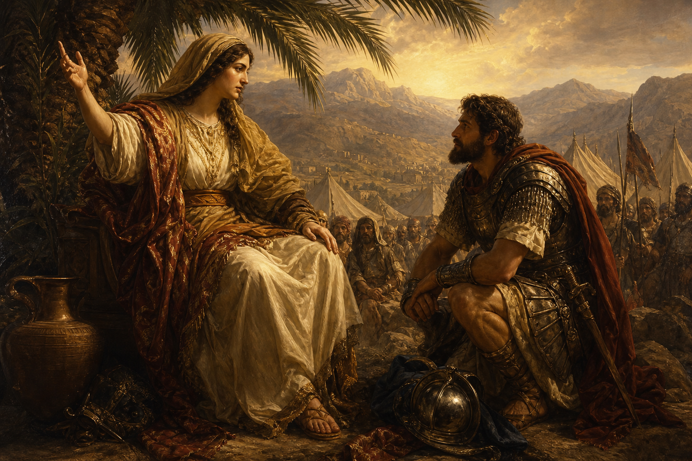

Old Testament · Book 7 of 39
Judges
Without a king, the people keep doing what is right in their own eyes, and God keeps raising up rescuers anyway.
Judges tells the same story seven times over: Israel drifts, Israel suffers, Israel cries out, and God sends someone to deliver them.
In those days there was no king in Israel: every man did that which was right in his own eyes.
What happens in Judges
After Joshua's death, Israel settles into the land but fails to finish the task of driving out the nations around them, and slowly begins adopting their gods. The book settles into a repeating rhythm: the people abandon the Lord, He allows an enemy to oppress them, they cry out for help, and He raises up a judge — often an unlikely one — to deliver them, after which there is peace until the cycle begins again. Among these judges are Deborah, a prophetess who leads the nation to victory; Gideon, a fearful farmer hiding from his enemies whom God calls a mighty man of valour before he has ever won a battle; and Samson, a man of extraordinary strength and tragic weakness whose story ends in both failure and a final act of deliverance. By the book's final chapters, Israel's moral and spiritual state has badly unraveled, closing on one of the saddest lines in the Old Testament.
Why it matters
Judges is a sober mirror: it shows what happens when a people forget whose they are and try to live by their own judgment instead of God's word. Yet even here, mercy is the loudest voice in the book — every single cycle ends not in abandonment but in God sending someone to rescue a people who, by their own account, deserved none of it.
Jump to a chapter
Judges has 21 chapters — select one to begin reading there.